IGLESIA CRISTIANA
VISIÓN INTERNACIONAL APAXCO
UN LUGAR PARA encontrarse CON DIOS
“Me buscarán y me encontrarán cuando me busquen de todo corazón.”Jeremías 29:13
Adoración
Comunidad
Formación
Servicio
Comunidad
Formación
Servicio
